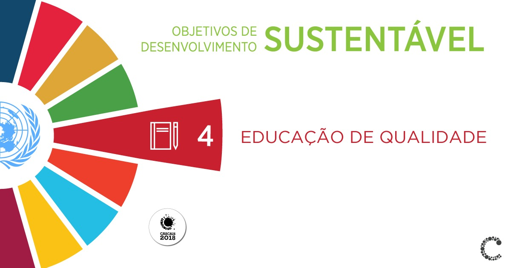

Desde 2000, houve enorme progresso na promoção do acesso universal à
educação primária para as crianças ao redor do mundo. Para além do foco na
educação básica, todos os níveis de educação estão contemplados no objetivo
de desenvolvimento sustentável 4, que enxerga como fundamental a promoção de
uma educação inclusiva, igualitária e baseada nos princípios de direitos
humanos e desenvolvimento sustentável. A promoção da capacitação e
empoderamento dos indivíduos é o centro deste objetivo, que visa ampliar as
oportunidades das pessoas mais vulneráveis no caminho do desenvolvimento.

4.c - Até 2030, substancialmente aumentar o contingente de professores
qualificados, inclusive por meio da cooperação internacional para a formação
de professores, nos países em desenvolvimento, especialmente os países de
menor desenvolvimento relativo e pequenos Estados insulares em desenvolvimento.
4.b - Até 2020 substancialmente ampliar globalmente o número de bolsas de estudo
disponíveis para os países em desenvolvimento, em particular, os países de
menor desenvolvimento relativo, pequenos Estados insulares em desenvolvimento
e os países africanos, para o ensino superior, incluindo programas de formação
profissional, de tecnologia da informação e da comunicação, programas
técnicos, de engenharia e científicos em países desenvolvidos e outros países
em desenvolvimento.
4.a - Construir e melhorar instalações físicas para educação,
apropriadas para crianças e sensíveis às deficiências e ao gênero e que
proporcionem ambientes de aprendizagem seguros, não violentos, inclusivos e
eficazes para todos.
4.7 - Até 2030, garantir que todos os alunos adquiram
conhecimentos e habilidades necessárias para promover o desenvolvimento
sustentável, inclusive, entre outros, por meio da educação para o
desenvolvimento sustentável e estilos de vida sustentáveis, direitos humanos,
igualdade de gênero, promoção de uma cultura de paz e não-violência, cidadania
global, e valorização da diversidade cultural e da contribuição da cultura
para o desenvolvimento sustentável.
4.6 - Até 2030, garantir que todos os jovens
e uma substancial proporção dos adultos, homens e mulheres, estejam
alfabetizados e tenham adquirido o conhecimento básico de matemática.
4.5 - Até 2030, eliminar as disparidades de gênero na educação e garantir a igualdade de
acesso a todos os níveis de educação e formação profissional para os mais
vulneráveis, incluindo as pessoas com deficiência, povos indígenas e as
crianças em situação de vulnerabilidade.
4.4 - Até 2030, aumentar substancialmente o número de jovens e adultos que tenham habilidades
relevantes, inclusive competências técnicas e profissionais, para emprego,
trabalho decente e empreendedorismo.
4.3 - Até 2030, assegurar a igualdade de
acesso para todos os homens e mulheres à educação técnica, profissional e
superior de qualidade, a preços acessíveis, incluindo universidade.
4.2 - Até
2030, garantir que todos os meninos e meninas tenham acesso a um
desenvolvimento de qualidade na primeira infância, cuidados e educação
pré-escolar, de modo que estejam prontos para o ensino primário.
4.1 - Até 2030,
garantir que todas as meninas e meninos completem o ensino primário e
secundário livre, equitativo e de qualidade, que conduza a resultados de
aprendizagem relevantes e eficazes.